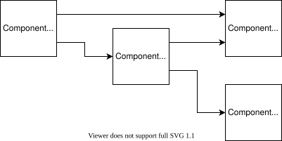

How component updates are ordered#
Update sequencing is performed with the aim of minimising computational cost whilst ensuring that all wired component interactions are captured faithfully. As such a simulation tick is composed of the following steps:
In depth walk-through#
Consider the system shown below, in which outputs of Component A are wired to the input of Component B and the first input of Component C, whilst the output of Component B is wired to the second input of Component C and the input of Component D.

Determine which components require an update#
When performing a tick we begin by discovering which components require
updates, this is performed by walking the wiring to discover all dependants of
the root component, with the result stored in a collection named
to_update. In the instance where either Component C or Component D are
the root, only they themselves require an update. If Component B is the
root, it will require an update alongside Component C and Component D.
Whilst if Component A is the root all components require an update.
Schedule possible updates#
Next, we schedule updates for all components whose dependencies have been
resolved; Dependency resolution is established by checking whether any of their
dependencies remain in to_update. In the example where Component A serves
as the root, only Component A may have an update scheduled as all other
components have one or more of their dependencies awaiting update.
If Component A were not to require an update, either because Component B
was the root or because Component A had already been resolved, Component B
would have an update scheduled. Similarly, if Component B had been resolved
the updates of both Component C and Component D would be scheduled.
Handle responses#
When a component update is completed and the corresponding response is
received, the component can be removed from to_update and schedule
possible updates if incomplete.
Schedule possible updates if incomplete#
If to_update is now empty we can assert that the state of the simulation
has been brought up to date and complete the tick, otherwise we schedule
possible updates and handle responses as performed previously.